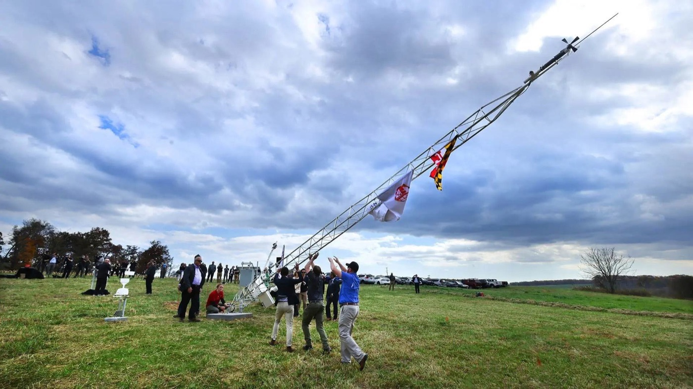
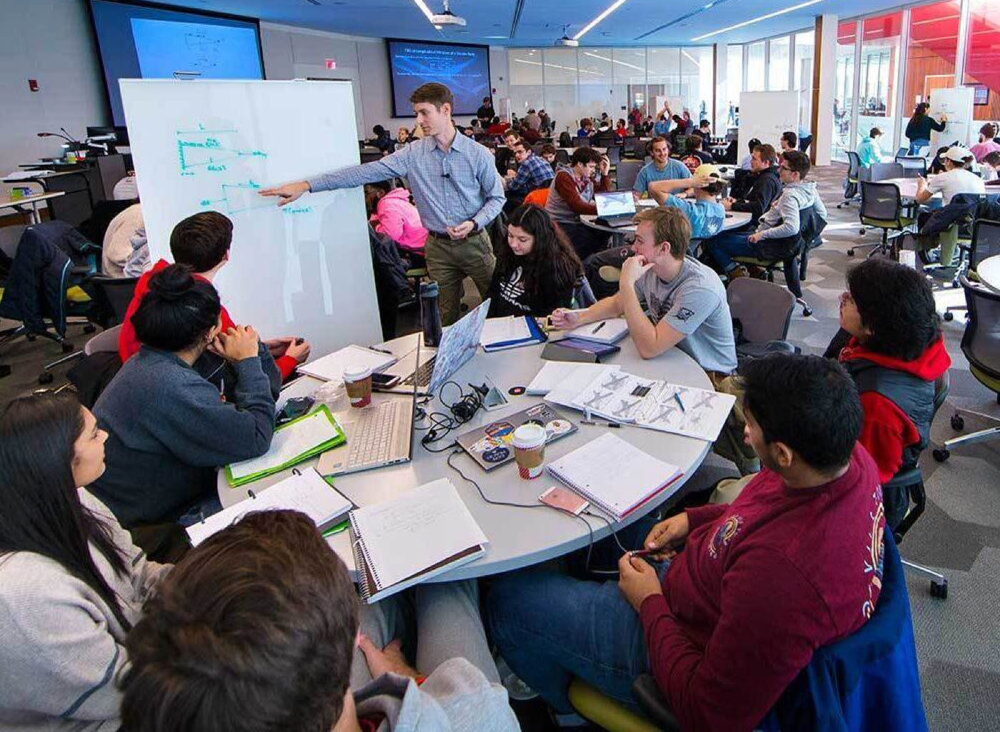
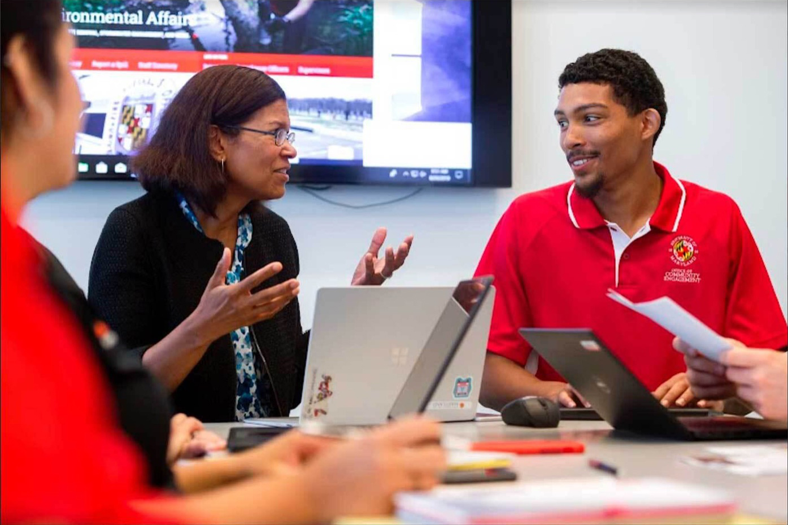
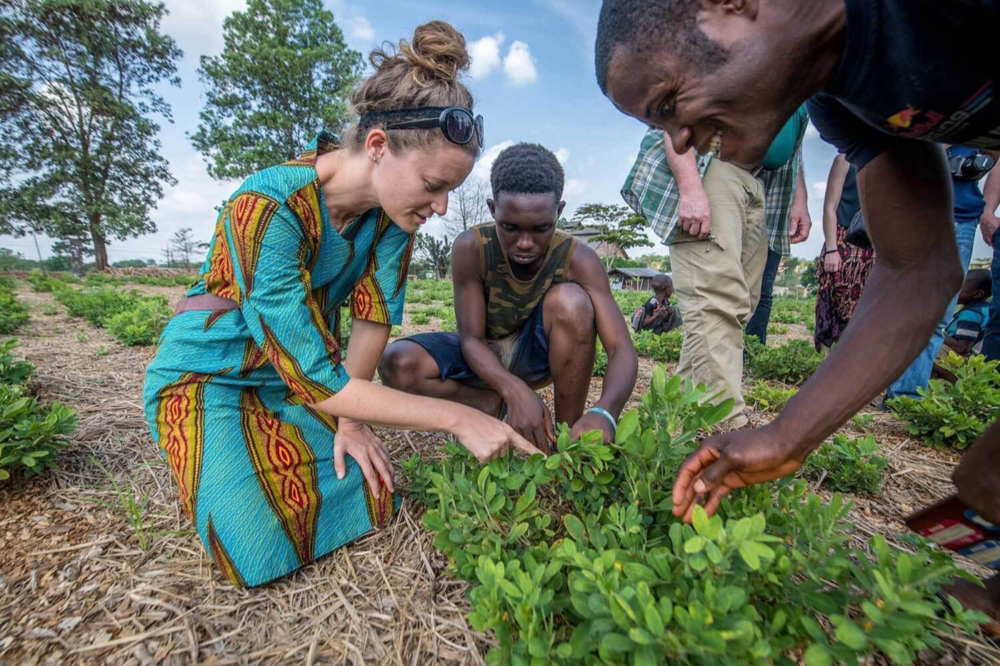

Impact
Our Progress & Impact for the Public Good
The University of Maryland's excellence is the result of our collective efforts – across divisions, colleges and schools, and in the community.
An important part of implementing Fearlessly Forward is telling our stories and tracking our progress. We launched our strategic planning process in 2021. Since then, we've seen tremendous progress in key areas of impact. A selection of qualitative and quantitative measures are highlighted on this page, and our exciting progress is captured in our annual progress report.
How We're Moving Fearlessly Forward

We Take on Humanity's Grand Challenges
Our education, research, scholarship and creative activities, and service are designed to accelerate solutions to humanity’s grand challenges—within our communities and around the globe.
Research and scholarly activity expenditures
$536M
$713M
$812M
$902M
33%
Increase in expenditures
New and expanded partnerships through the Grand Challenges Grants program
200
450
125%
Increase in partnerships
Startups created from UMD research
60
81
35%
Increase in startups created
U.S. patents issued to UMD faculty, staff, and student inventors through UM Ventures
971
1,289
33%
Increase in patents

We Reimagine Learning
We reimagine learning and teaching as inclusive, experiential, publicly engaged, creative, integrative, holistic, and empowering.
Students winning nationally competitive awards and scholarships
73
124
70%
Percent increase in students
Defined as: Awards identified and coordinated through the National Scholarship Office. Awards must be nationally competitive and sponsored by agencies that are members of the National Association of Fellowship Advisors or comparable organizations.
Expanded accessible, flexible, and learner-centered environments through the Learning Environment Modernization program
38
178
368%
Increase in projects completed
General-purpose classrooms meeting Section 503 accessibility requirements
326
331
99%
GPCs that meet accessibility requirements

We Invest in People and Communities
We invest in people, their well-being and advancement, and the conditions that support their ability to fully participate and thrive in our community, state, and world.
Average need-based aid to undergraduate students with financial need
$10,599
$17,425
64%
Increase in average aid awarded
Defined as: Average need-based scholarship and grant award for full-time undergraduates awarded any need-based aid for the academic years 2020-21 and 2023-24.
Number of students who receive federal Pell Grants
5,448
7,277
34%
Increase in Pell Grant recipients
Four-year graduation rate for new first-time students
76%
80%
4%
Percentage point increase in graduation rate
Six-year graduation rate for new first-time students
88.4%
88.6%
0%
Percentage point increase in graduation rate

We Partner to Advance the Public Good
We will create and sustain partnerships that allow our research to have impact locally and globally, our education to prepare students for civic engagement and impact, and our service to create solutions for a more equitable, sustainable, and resilient world.
Economic impact in the state of Maryland
$3.16B
$3.7B
17%
Increase in economic impact on the State of Maryland
Number of all undergraduate students enrolled at UMD from Prince George's County and Baltimore City
2,957
3,577
21%
Increase in students enrolled
We Move Fearlessly Forward
To improve the lives of every person on Earth, we will reimagine teaching and learning; accelerate solutions to the grand challenges of our time through creativity and discovery; and forge a diverse and inclusive community where our differences are celebrated and equity is relentlessly pursued.
Our preeminence as a top ranked national research university by U.S. News & World Report
20
16
25%
Gain in numeric ranks
UMD programs ranked in the Top 25 nationally by U.S. News & World Report
67
69
3%
Increase in top 25 programs
Number of faculty elected into National Academies
62
84
35%
Increase in number of faculty
Defined as: National Academy (Engineering, Science, Medicine, Education, Public Administration, Inventors); American Academy of Arts and Sciences. As of Dec. 31 of each year.
Number of faculty receiving select awards and honorifics
542
641
18%
Increase in select awards and honorifics
Defined as: National Academy (Engineering, Science, Medicine, Education, Public Administration, Inventors); American Academy of Arts and Sciences; Pulitzer Prize; Fulbright, Guggenheim, Sloan, and NEH fellowships; American Association for the Advancement of Science; NSF PECASE; Emmy, Grammy, Oscar, and Tony Awards; MacArthur Genius/Fellow; Fields Medal; Weiner Prize; National Medal of Science or Technology. Years are the award year or, in the case of Fulbright, the spring of the award year. As of Dec. 31 of each year.
News
Grand Challenges
‘Make AI a Force That Is Uplifting for All,’ UMD Leaders Urge at Global Summit
Pines, Daumé Join International Leaders, Tech Pioneers to Discuss AI’s Impact on Education and More
Reimagine Learning
UMD Celebrates Record Number of Gilman Scholars
Study-Abroad Opportunities for Students With Financial Need Rank Among Top 5 Nationally
Public Good
$40K Philanthropic Challenge Celebrates Societal Impact
6 Student Teams to Demonstrate How They ‘Do Good’ in Pitch Competition
People & Communities
Nominations Open for Terrapin Innovation & MVP Impact Awards
Awards recognize staff members who exemplify a Fearlessly Forward attitude
FEARLESSLY FORWARD IN PURSUIT OF EXCELLENCE AND IMPACT FOR THE PUBLIC GOOD: THE UNIVERSITY OF MARYLAND STRATEGIC PLAN is a living document and will evolve and grow as we do. Please visit this site to follow our progress as we move fearlessly forward.